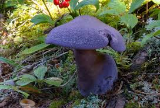

TYPES OF MUSHROOMS
| Image | Genus | Species | Type | Common Name |
|---|---|---|---|---|
 |
Neoboletus | praestigator | Bolete | Scarletina Bolete |
 |
Boletopsis | grisea | Polypore | Gray False Bolete, Kurotake |
| Cantharellus | cibarius | Edible | Chanterelle |  | Boletus | edulis | Edible | Porcini |
 |
Amanita | muscaria | Toadstool | Fly Agaric |
 |
Pleurotus | ostreatus | Edible | Oyster Mushroom |
| Cite sources here | ||||
| 1 | 2 |
| 3 |